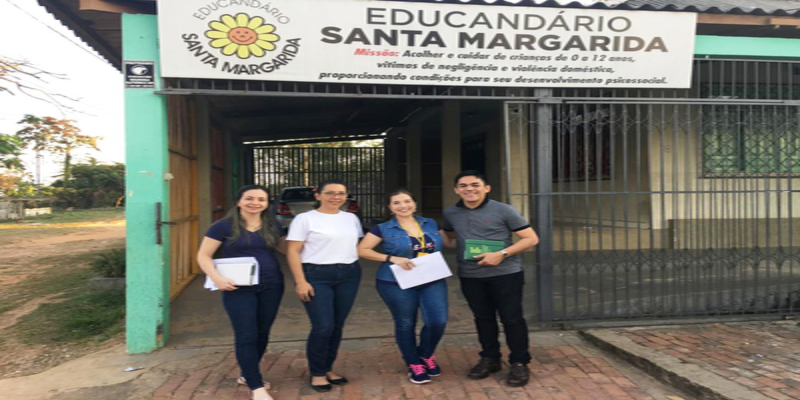

GOVERNO VOLTA A MANTER EDUCANDÁRIO E REPASSA MAIS DE R$ 300 MIL À ENTIDADE
O Educandário Santa Margarida, localizado em Rio Branco, acaba de receber do governo do Estado o repasse no valor de R$ 305.949,28, referentes a sete parcelas aos meses (mês de março a setembro) de 2019.
A maioria das parcelas estava atrasada. O recurso busca atender as necessidades da entidade e alinhar projetos no âmbito social.
Os atrasos no repasse de recursos, segundo o atual governo, deu-se em razão de que a gestão anterior deixou de fazer a previsão na Lei Orçamentária Anual para o Exercício de 2019.
Este ano, houve entraves com a não aprovação Lei de Subvenções, além de pendências na documentação do Educandário.
Para o pagamento do restante dos meses, será feito um aditivo para o pagamento de mais 4 parcelas referente aos meses de outubro/novembro/dezembro e 13°.
Na última sexta-feira, 12, a secretária de Estado Assistência Social, dos Direitos Humanos e de Políticas para as Mulheres (SEASDHM), Claire Cameli, visitou o abrigo e reafirmou parceria do Estado com a instituição. “O governo pretende desenvolver ações que ajudem o trabalho desses profissionais e voluntários, que têm contado com a doação da sociedade civil, de instituições, para a manutenção e o cuidado com essas crianças.”, ressaltou Claire Cameli.
Alimentação, vestuário, material de limpeza, higiene pessoal e calçados são em sua grande maioria, conforme o coordenador financeiro, Nilton Cosson, são oriundas de doações da sociedade civil. “Abrigamos essas crianças, assumindo a responsabilidade de cuidar delas.
Com as parcerias conseguimos desenvolver um trabalho de excelência”, disse Nilton Cosson.
Aos 76 anos de existência, o Educandário Santa Margarida é a única instituição que atende crianças de zero a 12 anos em Rio Branco.
Hoje, são abrigadas 36 crianças vítimas de abandono, negligência e violência. Lá, trabalham diariamente 24 profissionais de várias áreas, como: cuidadores, cozinheiros, serviços gerais, zelador, motorista, administrador, assistente social, psicólogo, assistentes pedagógicos e voluntários que ajudam nas escalas diurnas e noturnas.